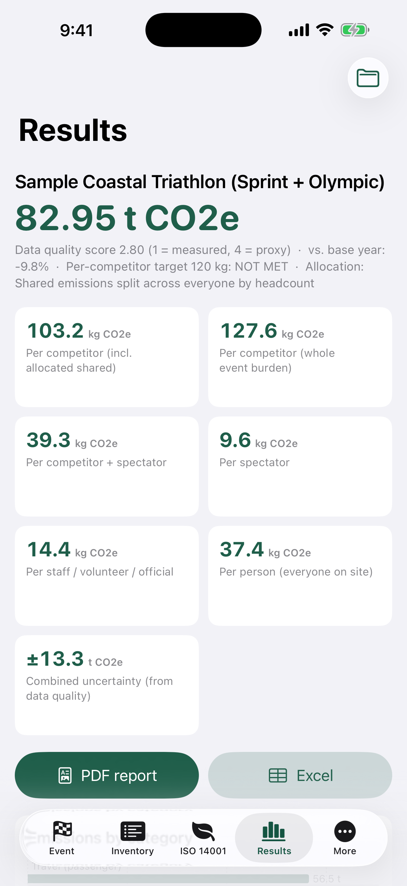
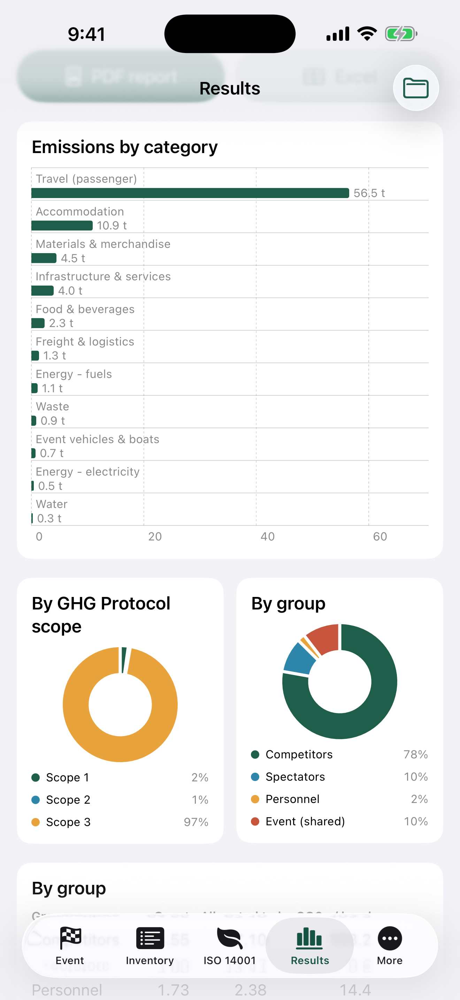
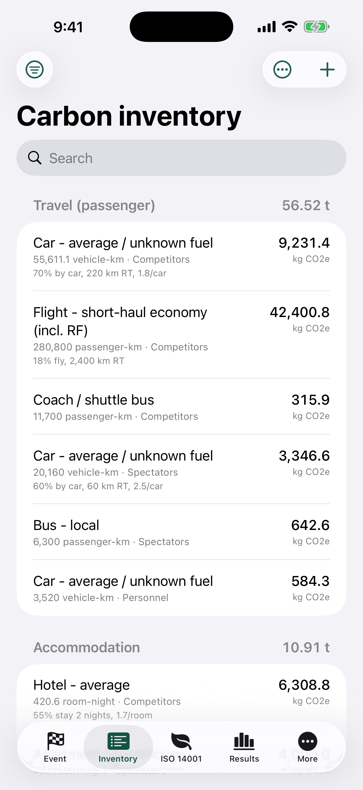
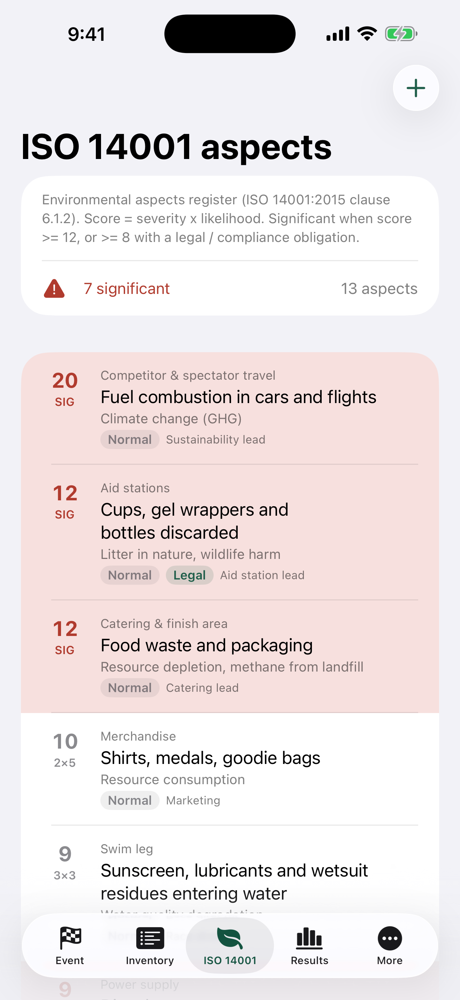
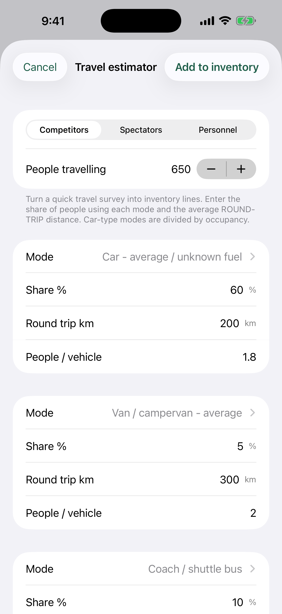
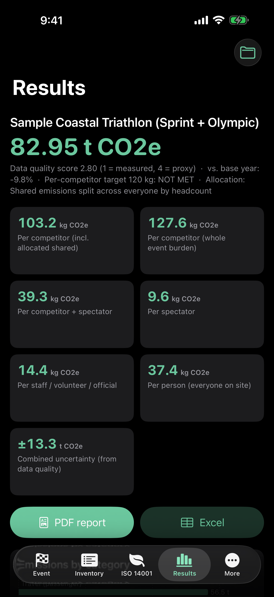

TriCarbon
Carbon footprint & ISO 14001 aspects for triathlon and multisport events · iPhone and Ubuntu
Triathlon CO2 & ISO 14001. Carbon footprint of your triathlon or multisport event – per competitor, spectator, volunteer and the whole race – with an ISO 14001 register and PDF/Excel reports.
Current version 1.3.0 – what's new · how to test
TriCarbon calculates the carbon footprint of triathlon and multisport events – per competitor, per competitor and spectator, per staff member and volunteer, and for the event as a whole – and keeps the ISO 14001 environmental aspects register alongside it.
FOR RACE ORGANISERS AND SUSTAINABILITY LEADS
• Triathlon, duathlon, aquathlon, aquabike, swimrun, cross triathlon and multisport festivals
• Enter competitors, spectators, staff, volunteers and officials, the event days and your reporting boundary
CARBON INVENTORY
• About 180 ready-made emission factors: travel by car, coach, train and plane, hotel nights, meals and aid-station food (bananas, gels, isotonic drinks), mains and bottled water, grid electricity and generators, safety boats, jet skis and lead vehicles, shirts, medals, swim caps and cups, waste by treatment route, freight, portable toilets, equipment hire and refrigerants
• Add your own items and factors; mark each line as measured, calculated, estimated or proxy
• Travel estimator: turn a quick survey (60% by car, 200 km round trip, 1.8 per car…) into inventory lines
RESULTS
• Event total, per-head figures and a combined uncertainty from data quality
• Charts by category, GHG Protocol scope and group, and a breakdown by ISO 14064-1:2018 category
• Top 10 sources, base-year comparison, per-competitor target check and tailored reduction ideas
• Shared emissions allocated by headcount, to competitors only, or in proportion to each group's footprint
ISO 14001
• Aspects register (clause 6.1.2) pre-filled with typical triathlon aspects – swim leg, safety boats, aid-station litter, generators, sanitation, noise, emergencies
• Severity × likelihood scoring, legal obligations, significance, operational controls, objectives and owners
REPORTS AND DATA EXCHANGE
• PDF report and Excel workbook (live formulas), in English or Montenegrin
• CSV for Power BI, Tableau and Looker Studio, inventory CSV, JSON
• Import from CSV, Excel or JSON; names recognised in English and Montenegrin
• Event files are shared with the TriCarbon desktop app for Ubuntu
YOUR WAY
• English and Montenegrin (crnogorski)
• Light, dark or automatic appearance
PRIVATE
• No account, no tracking, no ads. Your events stay on your iPhone.
Built-in emission factors are indicative (aligned with UK DESNZ/DEFRA 2026 and published life-cycle averages). For audited reporting replace them with your country's official factors in the factor library.






Crnogorski
TriCarbon računa karbonski otisak triatlona i višesportskih događaja – po takmičaru, po takmičaru i gledaocu, po članu osoblja i volonteru i za cijeli događaj – i vodi registar aspekata životne sredine po ISO 14001. Izvještaji u PDF i Excel formatu, na engleskom ili crnogorskom. Jezik i izgled (Automatski, Svijetli, Tamni) mijenjate u Više → Podešavanja.